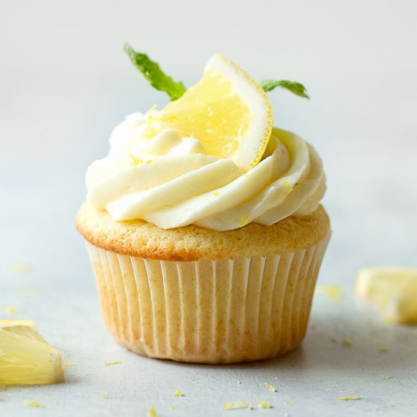

Purpose of the Product/Service
Maroyaka is looking forward to breaking the association of pastries to being expensive and rightfully bring down the prices in the pastry industry. This will allow “pastry wanters” to become “pastry havers.” Offering an affordable product in the market will let customers have a wider variety of delicacies they like and afford. As of now, Maroyaka offers 5 different products and is checking out the possibility of expanding their list of products.Product’s Unique Features
Maroyaka approaches the pastry industry with two unique features. First will be their recipe for their following products which were developed for years of continued practice and flourishing by their bakers, separating their product’s identity from the rest of its competitors. Design-wise, the bakers from Maroyaka honed their artistry along with their baking abilities. Thus, the products Maroyaka presents have their own charm and attractiveness that matches none. Second, the capability of the company to micromanage their resources that results in their products having a noteworthy cut in price. The cut in price allows a significant difference when compared with their leading competitorsMaterial Requirements and Sources of Supply
The materials needed and their respective sources of supply are as follows;
Materials |
Source |
Packaging |
|
| Cupcake Packaging (2, 4, and 6 pcs) | Facebook Marketplace Seller |
| S’mores Packaging (6, 8, and 12 pcs) | Facebook Marketplace Seller |
| Graham Balls Packaging (6, 10, and 18 pcs) | Facebook Marketplace Seller |
| Float Cups (12, 16, and 22 oz) | Gagmax Packaging Solutions |
| Cookies Packaging (6, 9, and 12 pcs) | Pasig MegaMarket |
Ingredients |
|
| Cupcake | SM Supermarket |
| S’mores | SM Supermarket |
| Graham Balls | SM Supermarket |
| Float | SM Supermarket |
| Cookies | SM Supermarket |
Process and equipment that will be used to manufacture the product/render the service
Chocolate Cupcake Process
-
Mix Dry Ingredients
- Sift together 1 ½ cups of all-purpose flour, 1 ⅓ cups of granulated sugar, ¼ cup of cocoa powder, ½ tsp of salt, and 1 tsp of baking soda.
- Whisk together until fully combined
-
Make the buttermilk (if not available)
- Combine ½ cup of milk and 1 tbsp of vinegar
- Stir the mixture and set aside for later
-
Mix the wet ingredients
- In a different bowl whisk together 2 medium eggs, ¼ cup of sour cream, ⅓ cup of vegetable oil, ½ cup of the buttermilk mixture, ¼ cup of hot coffee, and 2 tsp vanilla extract.
-
Add the wet mixture to the dry mixture and combine using a mixer
or a whisk.
- Stir for a minute to activate some of the gluten in the flour and until there are no lumps left
-
Preparation for baking
- Line the muffin pan with cupcake liners
- Scoop 1 tbsp of the chocolate batter into each liner or until ⅓ of the liner
-
Baking
- Bake in the oven at 176°C for 25 minutes or until the centers are springy and set.
- Set aside and let the cupcakes cool.
-
Prepare the chocolate buttercream frosting
- Cream 1 ½ cups of room temperature unsalted butter using a mixer, a whisk, or a spatula.
- Sift a ⅓ cup of cocoa powder into the butter and mix.
- Add ½ tsp of salt while mixing
- In a different bowl, sift 3 cups of powdered sugar.
- Gradually add a cup of powdered sugar into the buttercream mixture until the sugar is incorporated more.
- Add ½ tsp of vanilla extract and 2 tsp of lukewarm coffee while mixing
- Add a bit of salt and coffee if needed.
- Add in 1 tbsp of cream and until everything is fully combined.
-
Decorate the cupcakes
- Transfer an ample amount of buttercream into a piping bag
- Pipe the frosting on the chocolate cupcakes in a swirling motion or what fits best to the baker’s preference.
- Chill the cupcakes in the refrigerator to avoid the buttercream frosting from melting.
Red Velvet and Cream Cheese Cupcakes
-
Mix Dry Ingredients
- In one bowl, sift together 1 ⅔ cups of all-purpose flour, ¼ heaping tsp of baking soda, 1 tsp of baking powder, ¼ heaping tsp of salt, 1 cup of granulated sugar, and 2 tsp of cocoa powder.
- Whisk together and set aside.
-
Make the buttermilk (if not available)
- Combine ¾ cup of milk and less than a tablespoon of vinegar
- Stir the mixture and set aside for later
-
Mix the wet ingredients
- Mix 3 room temperature eggs, ¾ cups of buttermilk
- Add in 2 tsp of vanilla extract then mix
- Add 3 drops of red food coloring and whisk until the color incorporates with the batter.
-
Use the reverse creaming method with the dry ingredients
- Cut ¾ cups of room temperature unsalted butter and mix with the dry mixture
- Resulting mixture must have a wet sandy texture
-
Mix the wet mixture with the dry mixture
- Gradually add half of the wet mixture into the dry mixture until fully combined.
- Add ¼ of the remaining half of the wet mixture and mix.
- Add in the rest of the mixture and mix well.
- Scrape down the sides of the bowl and add more food coloring if needed.
-
Preparation for baking
- Line the muffin pan with cupcake liners
- Scoop an ample amount of the mixture to each liner.
-
Baking
- Bake in the oven at 176°C for 15-20 minutes.
- Switch the muffin pan halfway through to get a nice even bake.
-
Prepare the cream cheese frosting
- In a bowl, sift 2 ¾ cups of confectioners sugar
- In a different bowl, cream 1 ½ cups of room temperature butter
- Add a pinch of salt and 16 oz of room temperature cream cheese to the butter mixture and mix well.
- After mixing, add 1 tsp of vanilla extract then cream the frosting.
- Gradually add a cup of confectioner's sugar a time and let it incorporate with the mixture.
- Add more sugar if the mixture is too runny to firm it up.
- Add a bit of salt if needed.
-
Decorate the cupcakes
- Grate a little bit of a cupcake to produce crumbs for garnish. (optional)
- Transfer an ample amount of cream cheese frosting into the piping bag.
- Pipe the frosting on the red velvet cupcakes in a swirling motion or what fits best to the baker’s preference.
- Sprinkle the crumbs on top of the frosting.
- Chill the cupcakes in the refrigerator.
Blueberry Cheesecake Cupcakes
-
Prepare the crust
- Mix 2 cups of crushed graham and 3 tablespoons of granulated sugar.
- Add ½ cup of melted butter and mix. The mixture must resemble the texture of damp sand.
-
Prepare the cheesecake batter
- Beat 2 bars of 250g room temperature cream cheese until smooth and creamy.
- Add 1 cup of granulated sugar, mix until well combined.
- Scrape down the sides of the bowl and beat for a few more minutes.
- Add 1 cup of heavy cream and mix until fully combined.
- Add in 2 large eggs, 1 tsp of vanilla extract, and ½ tsp salt and beat together slowly until combined.
-
Preparation for baking
- Preheat the oven at 170°C for 3 mins.
- Line the muffin pan with cupcake liners.
- Scoop 1 tbsp of crust mixture for each liner.
- Gently press to flatten make the crust compact.
- Fill each liner with 3 tbsp of cheesecake batter.
- Tap the muffin pan to release air bubbles.
-
Baking
- Bake in the preheated oven at 170°C for 20-25 minutes.
- Take out the pan when the sides are firm and the center jiggles a little.
- Let the cupcakes cool completely
- Add the blueberry puree/jam for the toppings.
- Chill the cupcakes in the refrigerator.
Strawberry Cheesecake Cupcakes
-
Prepare the crust
- Mix 2 cups of crushed graham and 3 tablespoons of granulated sugar.
- Add ½ cup of melted butter and mix. The mixture must resemble the texture of damp sand.
-
Prepare the cheesecake batter
- Beat 2 bars of 250g room temperature cream cheese until smooth and creamy.
- Add 1 cup of granulated sugar, mix until well combined.
- Scrape down the sides of the bowl and beat for a few more minutes.
- Add 1 cup of heavy cream and mix until fully combined.
- Add in 2 large eggs, 1 tsp of vanilla extract, and ½ tsp salt and beat together slowly until combined.
-
Preparation for baking
- Preheat the oven at 170°C for 3 mins.
- Line the muffin pan with cupcake liners.
- Scoop 1 tbsp of crust mixture for each liner.
- Gently press to flatten make the crust compact.
- Fill each liner with 3 tbsp of cheesecake batter.
- Tap the muffin pan to release air bubbles.
-
Baking
- Bake in the preheated oven at 170°C for 20-25 minutes.
- Take out the pan when the sides are firm and the center jiggles a little.
- Let the cupcakes cool completely
- Add the blueberry puree/jam for the toppings.
- Chill the cupcakes in the refrigerator.
Chocolate Chip Cookies
-
Prepare the cookie dough
- Cream ½ cup of room temperature unsalted butter with ½ cup of granulated sugar and ½ cup of light brown sugar using a spatula.
- Add 1 room temperature egg and 1 tsp of vanilla extract then mix
- In the same bowl, sift together 1 ¼ cup of all-purpose flour, 1 tbsp of cornstarch, ½ tsp of baking soda, and ½ tsp of salt.
- Combine until blended thoroughly
- Add in 250g of chopped milk chocolate bar or 1 ½ cup of chocolate chips.
-
Preparation for baking
- Scoop 2 tbsp of the dough, roll into a ball shape by hand and place on the baking tray with parchment/baking paper.
- Chill the dough in the refrigerator for 1-2 hours
- After that, leave spaces between the cookies about 2 inches apart in all directions.
- Preheat the oven at 176°C
-
Baking
- Bake the cookies in the oven at 176°C for 8-10 minutes, until browned around the edges.
- Cool the cookies until fully set.
Red Velvet Cookies
-
Mix the dry ingredients
- In a bowl, sift together 1 ½ cups of all-purpose flour, 1 tbsp of cornstarch, ½ tsp of baking soda, ¼ tsp of salt, and 2 tsp of cocoa powder.
- Whisk together thoroughly
-
Mix the wet ingredients
- Cream ½ cup of room temperature unsalted butter
- Add ⅓ cup of brown sugar and ½ cup of granulated sugar, beat until light and fluffy.
- Add 1 large egg and vanilla extract then mix
- Add 2 tsp of red food coloring to the mixture, mix until the color has incorporated with the batter
-
Mix the wet and dry mixture
- Combine the dry mixture to the wet mixture and blend.
- Add 250g of chopped white chocolate bar or 1 ½ cup of white chocolate chips.
- Fold the dough until the white chocolate pieces are distributed evenly
-
Preparation for baking
- Scoop 2 tbsp of the dough, roll into a ball shape by hand and place on the baking tray with parchment/baking paper.
- Chill the dough in the refrigerator for 1-2 hours
- Leave spaces between the cookies about 2 inches apart in all directions.
- Preheat the oven at 176°C
-
Baking
- Bake the cookies in the oven at 176°C for 8-15 minutes, until browned around the edges.
- Cool the cookies until fully set.
Cookies and Cream Cookies
-
Prepare the ingredients
- Make sure all the ingredients are room temperature.
- Break apart the oreo cookies by hand into little pieces.
-
Mix the dry ingredients
- Whisk 2 cups of all-purpose flour, 2 tsp of cornstarch, ¾ tsp of baking soda, and ½ tsp of salt. Set aside.
-
Mix the wet ingredients
- Mix 10 tbsp or 140g of unsalted butter and 4 oz of cream cheese until creamy.
- Add ¾ cups of granulated sugar and ¼ cup of brown sugar, mix until light and fluffy.
- Add 2 tsp of vanilla and 1 egg, mix until combined thoroughly.
-
Mix the wet and dry mixture
- Add the dry mixture to the wet mixture and combine.
- Add 200g of chopped white chocolate bar or ½ of white chocolate chips and fold the dough for a bit.
- Add the oreo cookies
- Gently fold dough until the chocolate and the oreo cookies are distributed evenly
-
Preparation for baking
- Scoop 2 tbsp of the dough, roll into a ball shape by hand and place on the baking tray with parchment/baking paper.
- Chill the dough in the refrigerator for 1-2 hours
- Leave spaces between the cookies about 2 inches apart in all directions.
- Preheat the oven at 176°C
-
Baking
- Bake the cookies in the oven at 176°C for 8-15 minutes, until browned around the edges.
- Cool the cookies until fully set.
Mango Float
-
Making the mango shake
- Add 4 tbsp of mango cubes, 3 tbsp of evaporated milk, 6 tbsp of condensed milk, and 3 cups of crushed ice in the blender.
- Blend until smooth.
-
Assemble mango graham shake in a clear cup
- Fill half of the cup with mango shake
- Add 2 tbsp of crushed graham
- Fill the rest of the cup with mango shake
- Add 1 tbsp of crushed graham and spread it out to completely cover the top.
- On top of the crushed graham, add 1 tbsp of mango cubes
- Drizzle with condensed milk on top of the mango cubes
- Chill.
Oreo Float
-
Prepare the ingredients
- Crush 9-12 pcs of oreo cookies
- Chop 2-3 pcs of oreo cookies for toppings
-
Making the oreo shake
- Add 3 pcs of oreo cookies, 6 tbsp of evaporated milk, and 3 cups of crushed ice into the blender. Blend.
- Gradually add 3 cups of crushed ice and blend until smooth.
-
Assemble oreo shake in a clear cup
- Pour the oreo shake halfway through the cup
- Add 2 tbsp of crushed oreos
- Add 2 tbsp of crushed oreos
- Top with chopped and crushed oreos
- Drizzle with condensed milk
- Chill.
Graham Balls
-
Prepare the graham dough
- In a bowl add 2 ½ cups of crushed graham
- Add a little bit of condensed milk and combined thoroughly
- Gradually add more condensed milk to thicken the mixture
- Knead the dough by hand when the mixture starts to show lumps
- Add more condensed milk needed and until the mixture forms a dough-like appearance.
-
Making Graham Balls
- Roll and flatten an ample amount of graham dough by hand
- Add 1 piece of marshmallow in the middle
- Cover the marshmallow and shape the dough into a ball
-
Decorate the graham balls
- Pour ½ cup of crushed graham or any other garnish into a plate
- Roll and cover the graham balls with the garnish
S’mores
-
Prepare the ingredients
- Chop or break apart a chocolate bar into equal pieces
- Break apart graham crackers into equal square pieces
-
Assemble the s’mores
- Stack 1 piece of graham cracker, 1 piece of chocolate, 1 marshmallow, and another piece of graham cracker exactly in that order.
-
Grill the s’mores
- Place the s’mores on top of a foil
- Grill until the marshmallow puffs up and the chocolate melts a little

Production/Service Process and Controls
The quality control of the production of each product will be ensured in every production process. Each product has a different process of its own. Hence, meticulous preparation must be guaranteed in order to yield results of high quality. As most of the products require baking, a method of cooking that utilizes prolonged exposure to dry heat at a certain time duration and temperature, time and temperature must always be taken into account to prevent mishaps in creating the product. Refrigeration is also a key component in making the products remain fresh at all times. Unlike baking, however, time intervals are not always considered. For contamination controls, the workplace must be invariably sterile. The workers must wear the necessary equipment in order to ensure the quality and cleanliness of the products.

Distribution logistics
Maroyaka will primarily operate home-based and use social media (e.g. Facebook, Twitter, Instagram) to promote products and take orders for better communication, in case of special requests from the customers. The customers will also be given an option to pick up their orders or have it delivered to the comfort of their homes through their preferred courier (e.g. Grab Express, Lalamove, Mr. Speedy).

Regulatory and other compliance issues
Maroyaka will primarily operate home-based and use social media (e.g. Facebook, Twitter, Instagram) to promote products and take orders for better communication, in case of special requests from the customers. The customers will also be given an option to pick up their orders or have it delivered to the comfort of their homes through their preferred courier (e.g. Grab Express, Lalamove, Mr. Speedy).
Market Analysis
| Historical Data (2 Years) | Total Demand | Supply: Previous 2 years Pastries Sold by Competitors per year | Total Supply | |
| Year 1 | Year 2 | |||
| Pastry Faith Cakes & Pastries | 754 | 233 | 347 | 580 |
| FM Craves Bread & Pastries Shop | 1249 | 724 | 459 | 1183 |
| Sweet Home Bakeshop | 156 | 107 | 33 | 140 |
| Hale’s Pastry Shop | 2190 | 1794 | 279 | 2073 |
| Good Karma Bakeshop | 2032 | 1286 | 638 | 1924 |
Data presented above shows five businesses in the pastry industry and the ratio of their demands and supply. The five competitors chosen are small businesses, that amassed their own customers through their Facebook pages, that provide pastries that fulfill the demand of the pastry industry. Despite the efforts of the different business, it was not enough and the demand keeps increasing.
Marketing Strategy |
Sales Strategy |
|---|---|
Sucre Jar will focus on utilizing their social media reach on different platforms such as Facebook, Twitter, Instagram, and TikTok. The company would like to focus on their advertising in Facebook as data suggests that 96.2% of the internet users ages 16-64 use Facebook. While TikTok would be their main advertising platform as it is slowly winning its battle against Facebook, especially in producing viral videos of any content. Sending news and updates through email addresses customer provides will be one of the marketing strategies the company is planning to utilize. |
The company will run a webpage that will host ordering and buying their products online. The webpage will ensure a user-friendly interface that can easily be navigated by customers of any age, even customers with little to no computer experience. Having a user-friendly interface helps establish a strong company-customer relationship. Sucre Jar values three variables that will guarantee customer retention: Product quality, minimal turnaround time, and accommodating customer service. Product quality will include the individual taste and appearance of the pastries and floats the company offers. Product freshness at the time the customer receives their order is subjected to Turnaround time. And accommodating customer service will add another layer that will solidify the trust of the customer towards the company. |
Product Characteristics or Features |
|
|---|---|
Maroyaka offers a unique touch to the classic snack go-to of the people. A recipe crafted to fit the general likings of the mass by still being able to show the character of the company through the taste and aesthetics. |
Affordability, as pastries are normally associated with being expensive. Maroyaka offers a significant price decrease while maintaining and surpassing the qualities of a good product through efficient use of the materials and ingredients the company wields. |
Pricing Policy
The Sucre Jar Company will adopt a different price based on the number of sweet delicacies present in a box and also the size of cups. As such, below is the pricing scheme that will be adopted:
| CUPCAKES | |
| AVAILABLE SIZES | PRICE (PESO) |
| 2 pcs | ₱ 70 |
| 4 pcs | ₱ 140 |
| 6 pcs | ₱ 200 |
| COOKIES | |
| AVAILABLE SIZES | PRICE (PESO) |
| 6 pcs | ₱ 60 |
| 9 pcs | ₱ 90 |
| 12 pcs | ₱ 110 |
| GRAHAM BALLS | |
| AVAILABLE SIZES | PRICE (PESO) |
| 6 pcs | ₱ 35 |
| 10 pcs | ₱ 55 |
| 18 pcs | ₱ 90 |
| FLOAT | |
| AVAILABLE SIZES | PRICE (PESO) |
| 12 oz | ₱ 50 |
| 16 oz | ₱ 65 |
| 22 oz | ₱ 80 |
| S’MORES | |
| AVAILABLE SIZES | PRICE (PESO) |
| 6 pcs | ₱ 50 |
| 8 pcs | ₱ 70 |
| 12 pcs | ₱ 90 |
Sales Projection
| CUPCAKES | |||||||
| Size | Price | Week 1 | Week 2 | Week 3 | |||
| Quantity (Units) | Peso | Quantity (Units) | Peso | Quantity (Units) | Peso | ||
| 2 pcs | ₱ 70 | 5 | ₱ 350 | 7 | ₱ 490 | 8 | ₱ 560 |
| 4 pcs | ₱ 140 | 5 | ₱ 700 | 7 | ₱ 980 | 8 | ₱ 1,120 |
| 6 pcs | ₱ 200 | 5 | ₱ 1,000 | 7 | ₱ 1,400 | 8 | ₱ 1,600 |
| Total | 15 | ₱ 2,050 | 21 | ₱ 2,870 | 24 | ₱ 3,280 | |
| COOKIES | |||||||
| Size | Price | Week 1 | Week 2 | Week 3 | |||
| Quantity (Units) | Peso | Quantity (Units) | Peso | Quantity (Units) | Peso | ||
| 6 pcs | ₱ 60 | 7 | ₱ 420 | 8 | ₱ 480 | 10 | ₱ 600 |
| 9 pcs | ₱ 90 | 7 | ₱ 630 | 8 | ₱ 720 | 10 | ₱ 900 |
| 12 pcs | ₱ 110 | 7 | ₱ 770 | 8 | ₱ 880 | 10 | ₱ 1,100 |
| Total | 21 | ₱ 1,820 | 24 | ₱ 2,080 | 30 | ₱ 2,600 | |
| GRAHAM BALLS | |||||||
| Size | Price | Week 1 | Week 2 | Week 3 | |||
| Quantity (Units) | Peso | Quantity (Units) | Peso | Quantity (Units) | Peso | ||
| 6 pcs | ₱ 35 | 8 | ₱ 280 | 9 | ₱ 315 | 10 | ₱ 350 |
| 10 pcs | ₱ 55 | 8 | ₱ 440 | 9 | ₱ 495 | 10 | ₱ 550 |
| 18 pcs | ₱ 90 | 8 | ₱ 720 | 9 | ₱ 810 | 10 | ₱ 900 |
| Total | 24 | ₱ 1,440 | 27 | ₱ 1,620 | 30 | ₱ 1,800 | |
| FLOAT | |||||||
| Size | Price | Week 1 | Week 2 | Week 3 | |||
| Quantity (Units) | Peso | Quantity (Units) | Peso | Quantity (Units) | Peso | ||
| 12 oz | ₱ 60 | 9 | ₱ 450 | 10 | ₱ 500 | 12 | ₱ 600 |
| 16 oz | ₱ 65 | 9 | ₱ 585 | 10 | ₱ 650 | 12 | ₱ 780 |
| 22 oz | ₱ 80 | 9 | ₱ 720 | 10 | ₱ 800 | 12 | ₱ 960 |
| Total | 27 | ₱ 1,755 | 30 | ₱ 1,950 | 36 | ₱ 2,340 | |
| S’MORES | |||||||
| Size | Price | Week 1 | Week 2 | Week 3 | |||
| Quantity (Units) | Peso | Quantity (Units) | Peso | Quantity (Units) | Peso | ||
| 6 pcs | ₱ 50 | 4 | ₱ 200 | 5 | ₱ 250 | 7 | ₱ 350 |
| 8 pcs | ₱ 70 | 4 | ₱ 280 | 5 | ₱ 350 | 7 | ₱ 490 |
| 12 pcs | ₱ 90 | 4 | ₱ 360 | 5 | ₱ 450 | 7 | ₱ 630 |
| Total | 12 | ₱ 840 | 15 | ₱ 1,050 | 21 | ₱ 1,470 | |
Financial Plan
| DETAILED START-UP SUMMARY | |||
| Expenses | Cost/Pieces | Products | 3 weeks |
| 60 Cupcakes | |||
| Boxes |
₱ 8
(2 holes) ₱ 15 (4 holes) ₱ 18 (6 holes) |
₱ 16
₱ 45 ₱ 54 |
₱ 48
₱ 135 ₱ 162 |
| Disposable plastic gloves |
₱18
(100 pcs) |
₱18 | ₱ 54 |
| Can of blueberry puree/jam |
₱ 329
(340g) |
₱ 329 | ₱ 987 |
| Granulated sugar |
₱ 163
(2 kg) |
₱ 326 | ₱ 978 |
| Cream cheese |
₱ 145
(225g) |
₱ 190 | ₱ 570 |
| Nestle cream | ₱ 75 | ₱ 225 | ₱ 675 |
| Eggs | ₱7 | ₱420 | ₱ 1260 |
| Vanilla extract |
₱ 42
(20 ml) |
₱ 84 | ₱ 252 |
| Salt |
₱ 37
(1 kg) |
₱ 37 | ₱ 111 |
| Can of strawberry puree/jam |
₱ 359
(907g) |
₱ 359 | ₱ 1077 |
| Milk chocolate Bar (Hershey’s) | ₱ 219 | ₱ 657 | ₱ 1971 |
| Chocolate bar (hershey’s) | ₱ 175 | ₱ 525 | ₱ 1575 |
| Chocolate bar (Goya) |
₱ 210
(6 pcs) |
₱ 210 | ₱ 630 |
| All-purpose flour |
₱ 75
(1 kg) |
₱ 350 | ₱ 1,050 |
| Cocoa powder | ₱ 138 | ₱ 414 | ₱ 1,242 |
| Baking powder |
₱ 29
(100g) |
₱ 116 | ₱ 348 |
| Baking soda |
₱ 49
(1 kilo) |
₱ 98 | ₱ 294 |
| Vegetable oil |
₱ 312
(500 ml) |
₱ 624 | ₱ 1,872 |
| Coffee |
₱ 130
(10 sachets) |
₱ 130 | ₱ 390 |
| Sour cream | ₱ 45 (200g) | ₱ 90 | ₱ 270 |
| Buttermilk |
₱ 184
(1 kilo) |
₱ 184 | ₱ 552 |
| Unsalted butter |
₱ 135
(225g) |
₱ 270 | ₱ 810 |
| Powdered sugar |
₱ 260
(500g) |
₱ 260 | ₱ 780 |
| Vinegar | ₱ 42 (1 L) | ₱ 84 | ₱ 252 |
| Red food coloring |
₱ 33
(20 ml) |
₱ 66 | ₱ 198 |
| TOTAL: | ₱ 6,181 | ₱ 18,543 | |
| 75 Cookies | |||
| Boxes |
₱ 180
(50 pcs) |
₱ 180 | ₱ 540 |
| Disposable plastic gloves |
₱ 18
(100 pcs) |
₱ 18 | ₱ 54 |
| Cocoa powder |
₱ 138
(500g) |
₱ 414 | ₱ 1,242 |
| Vanilla extract |
₱ 42
(20 ml) |
₱ 84 | ₱ 252 |
| Light brown sugar |
₱ 127
(2 kg) |
₱ 127 | ₱ 381 |
| White chocolate (Goya) |
₱ 80
(3 pcs) |
₱ 160 | ₱ 480 |
| Nestle All-purpose flour |
₱ 75
(1 kg) |
₱ 350 | ₱ 1,050 |
| Unsalted butter (Magnolia) |
₱ 135
(225g) |
₱ 270 | ₱ 810 |
| TOTAL: | ₱ 1,603 | ₱ 4,809 | |
| 93 Floats | |||
| Cups |
₱ 250
(50 pcs) |
₱ 500 | ₱ 1,500 |
| Disposable plastic gloves |
₱18
(100 pcs) |
₱18 | ₱54 |
| Ripe mangoes |
₱ 200
(1 kg) |
₱ 400 | ₱ 1,200 |
| Nestlé Sweetened Condensed Milk | ₱ 92 | ₱ 184 | ₱ 552 |
| Nestle All Purpose Cream | ₱ 75 | ₱ 225 | ₱ 675 |
| Oreo | ₱ 10 | ₱ 50 | ₱ 150 |
| Packs M.Y San CRUSHED graham crackers | ₱ 40 | ₱ 80 | ₱ 240 |
| TOTAL: | ₱ 1,457 | ₱ 4,371 | |
| 81 Graham Balls | |||
| Boxes |
₱ 165
(25 pcs) |
₱ 165 | ₱ 495 |
| Disposable plastic gloves |
₱18
(100 pcs) |
₱18 | ₱54 |
| Pack marshmallow |
₱ 33
(130g) |
₱ 99 | ₱ 297 |
| Powdered sugar |
₱ 125
(1 kg) |
₱ 250 | ₱ 750 |
| Chocolate sprinkles |
₱ 34
(100g) |
₱ 68 | ₱ 204 |
| Sweet candy sprinkles |
₱ 26
(100g) |
₱ 52 | ₱ 156 |
| TOTAL: | ₱ 652 | ₱ 1, 956 | |
| 48 S’mores | |||
| Boxes |
₱ 180
(50 pcs) |
₱ 180 | ₱ 540 |
| Disposable plastic gloves |
₱ 18
(100 pcs) |
₱ 18 | ₱ 54 |
| LARGE marshmallow |
₱ 55
(50 - 55 pcs) |
₱ 55 | ₱ 165 |
| M.Y San graham crackers |
₱ 36
(200g) |
₱ 108 | ₱ 324 |
| Bar milk chocolate (Hershey) | ₱ 219 | ₱ 657 | ₱ 1,971 |
| TOTAL: | ₱ 1,018 | ₱ 3,054 | |
START-UP SUMMARY
| START-UP SUMMARY | ||
| Products | Total Every Week | Total Every Month |
| 60 Cupcakes | ₱ 6,181 | ₱ 18,543 |
| 75 Cookies | ₱ 1,603 | ₱ 4,809 |
| 93 Floats | ₱ 1,457 | ₱ 4,371 |
| 81 Graham Balls | ₱ 652 | ₱ 1,956 |
| 48 S’mores | ₱ 1,018 | ₱ 3,054 |
| TOTAL: | ₱ 10,911 | ₱ 32,733 |